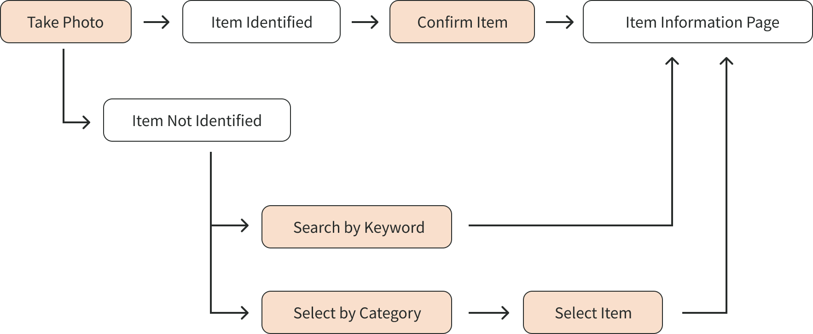
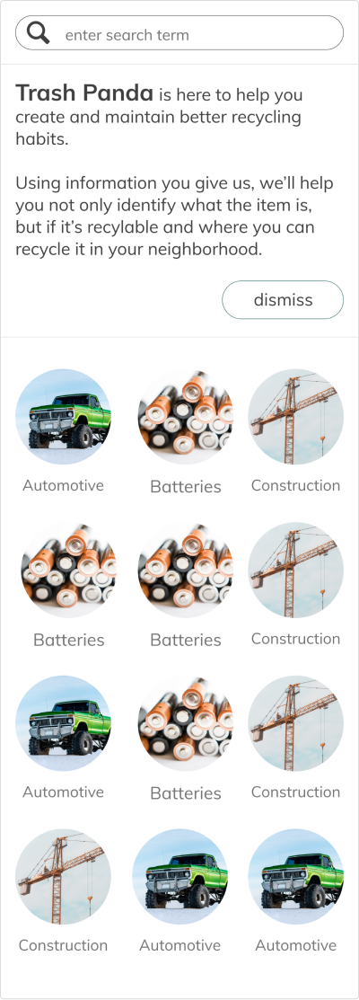

Trash Panda
Area of focus
Using research to guide & focus the team
Collaborating with different functions to create cohesive product
Creating an executable design that the team can quickly iterate on
Additional details
8 weeks to deliver fully functional product
Provided with a Product Vision to expand on
Team included 2 designers, 4 data science partners, and 4 web devs
Problem:
Humans need to rethink how we are interacting with our environment. Creating better recycling habits will directly affect the world and how the future lives in it.
Solution:
Focus on reaching as large an audience as possible and help them to create better recycling habits.
Discovery: Using research to refine how we can help
Initially, we knew we wanted to work with Earth911. Their API would give us the data we needed to create some kind of informational base to build from.
Data we could expect from Earth911:
- Specific item descriptions. Items included plastic bottles, engine parts, household cleaners, etc.
- Location-based information on how each item is disposed of or recycled in that area.
- Location-based information on specific disposal facilities that accept the item in question.
My parter and I decided to start with analyzing the current competition.
Competition takeaways
- In nearly all the competition, UX / UI was outdated and felt clunky and cluttered.
- All competitors failed to explain the what & why of what they were trying to accomplish.
- Many of these companies were not utilizing current technology to create a better experience.
Ideation: What could we build that promotes recycling?
We knew that we needed to make sure we utilized current technology to help solve this problem and keep younger users engaged with the product.
We wondered, what would happen if we enabled users to take a photo of an item in order to streamline the process of locating the item details within our database?
Key insights from user interviews
Any amount of inaccuracy in the image recognition causes a significant amount of distrust.
5 of the 6 people we spoke to reported they would not use the product if the image recognition accuracy was below 80%.
Motivation to recycle is present, yet people are hard-pressed to change their habits.
People are motivated to recycle in a myriad of ways - but not motivated enough to put a lot of energy into helping themselves learn or create better habits.
If we can’t guarantee 100% accuracy for image recognition, we need reliable fallbacks that the user can access with ease.
This model ensured that our users were never more than 3 taps away from the information they were looking for.
Progression: Continuously asking our users what works
A note about partnership in design: This was an incredible first experience in teamwork and collaboration with a design partner. We would frequently come to a point where we were not agreeing with the direction the design was going and we didn’t have time to get stuck.
Here are some things we both learned during our collaborative efforts:
- If you get stuck when pair-designing, take an hour or two to design on your own. Then come back and see where each of you went. Taking the best parts of each design and seeing how they can work together can create incredible results.
- Always make sure there is a user-experience based reason for all your decisions. Keep the user in the forefront of your mind!
- Be kind and take breaks. If you really can’t see the reasoning behind something, ask questions and seek out other resources that support the other person’s idea.
Knowing we were on a timeline, we quickly came up with several creative ideas for layout and flow. Below you can see the progression as we continued to build, test, and iterate.
Home Page Progression
We started not knowing whether we should showcase the image recognition over category search. Right away we knew we wanted to create a simplistic design, so we progressed into giving the user all 3 options on the landing page. You can see that more clearly in the final designs below.
Category Search Flow Progression


For category search, we wanted to remove any friction the user might encounter. We considered whether the user would prefer actual photos or icons to describe an item or material.
From user testing, we learned that users more easily recognize photos of items over icons. We realized we would have to sacrifice some aesthetics to include photos of all 300 items in the database, but it was something we did not regret doing in the end.
Camera & Results Progression
We wanted to make this flow as simple as possible: take a picture, get a result. This was where we had to collaborate closely with the data science team. We weren’t sure if their image recognition model would be able to take information from users to learn, or if the user took another picture that the results would be any different.
Navigation Progression
We went through many iterations trying to find a good solution for navigation. The app was simple but still needed some flexibility.